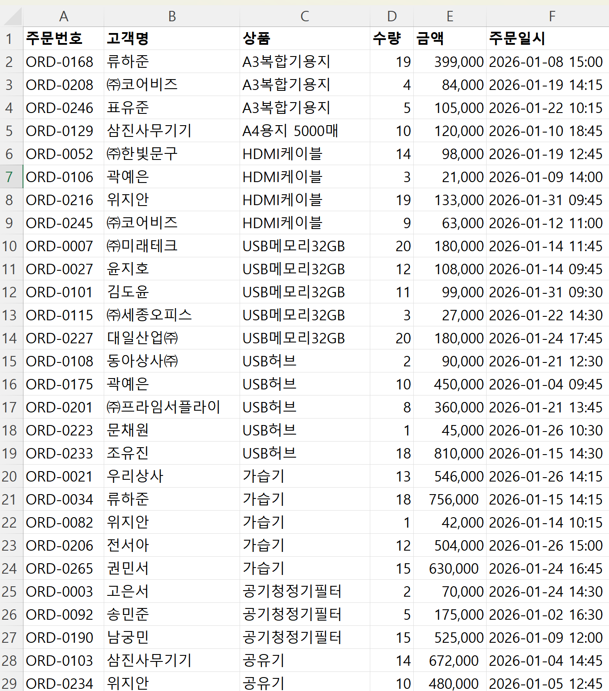
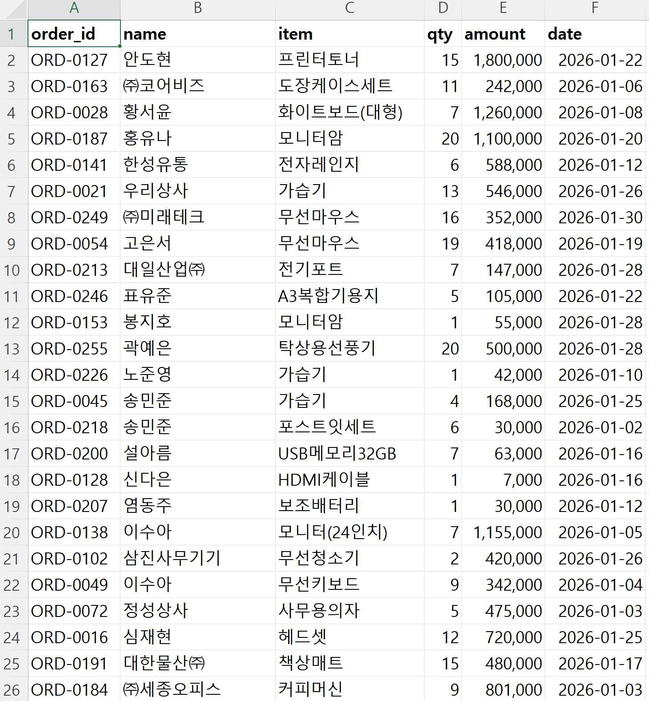
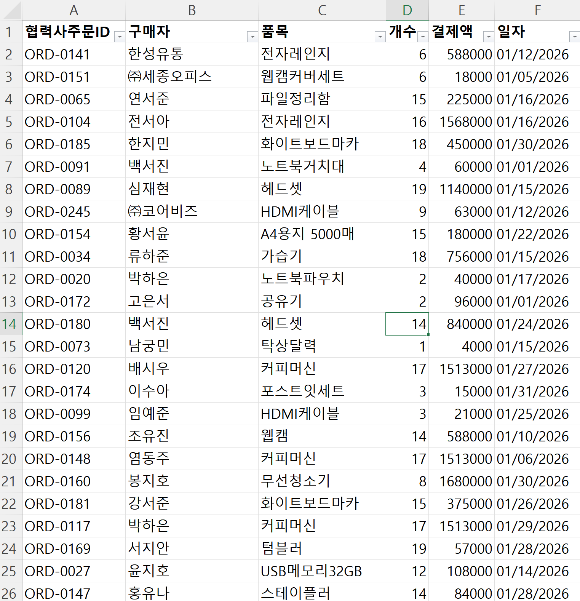

// 실습 1 · 흩어진 주문 한 표로 모으기
개요¶
한 줄 목표: 웹·전화·제휴 세 경로로 따로 들어온 주문 내역을, 제각각의 양식에서 하나의 표로 합치되 한 건도 빠뜨리거나 지어내지 않는다.
이 실습에서 쓰는 업무 유형 — 모으기(취합·통합) 검사하기(검증·검수) · 여섯 가지 유형 다시 보기
오늘 받은 일¶
입사 3주차. 영업지원팀 사수가 말합니다.
"주문이 웹·전화·제휴 세 군데로 따로 들어와요. 파일이 세 개인데 양식이 다 달라요. 어떤 건 제목이 한글, 어떤 건 영어예요. 이걸 하나의 주문종합 표로 합쳐줘요. 한 건도 빠지면 안 되고, 없는 값을 지어내도 안 됩니다."
웹은 '주문번호', 전화는 'order_id', 제휴는 '협력사주문ID'. 같은 뜻인데 이름이 제각각인 파일이 채널마다 쌓이는 건 어느 회사에서나 벌어지는 일입니다. 몇백 건이면 손으로도 되지만 실제 업무에서 수만 건이 되면 몇 시간짜리 일이 됩니다.
이 첫 실습에서는 그 일을 AI에게 통째로 맡기는 법을 배웁니다. 빠뜨리지 않는다, 맘대로 바꾸지 않는다, 없는 건 지어내지 않는다. 이 세 원칙을 규칙으로 넘기면 됩니다. 모든 주문 건을 종합한 엑셀 파일이 완성되면, 새거나 겹친 건은 없는지 검산까지 해볼 것입니다.
폴더에 있는 것¶
| 파일 | 무엇 |
|---|---|
웹주문.xlsx |
웹으로 들어온 주문 150건 |
전화주문.xlsx |
전화로 받은 주문 140건 |
제휴주문.xlsx |
제휴사가 넘긴 주문 120건 |
작업방법참고.xlsx |
작업 방법, 세 파일 열 이름 대조표 |
주문종합.xlsx |
채워 넣을 빈 템플릿 |



실습에서 할 일¶
| 단계 | 할 일 |
|---|---|
| 1단계 | 세 파일의 내용을 하나의 표로 정리한다 |
| 2단계 | 빠지거나 겹친 건이 없는지 원본과 대조하며 검산한다 |